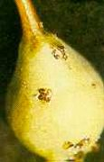
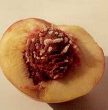
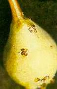

Keleti gyümölcsmoly
Grapholitha molesta
A csonthéjasok és almástermésűek veszélyes
károsítója. Évente 3-4 nemzedéket nevel, a fiatal hajtások és a gyümölcs
kártevője. Az első két nemzedék lárvái főképpen a csonthéjasok zsenge
hajtásaiban élnek, kártételük következtében a megtámadott hajtások - a barackmoly
kártételéhez hasonlóan - leszáradnak. A károsodott hajtásokon mézgafolyások
keletkeznek. A harmadik (és negyedik) nemzedék lárvái a gyümölcsök belsejében
rágnak.
A lárvák a kocsány felől rágják be magukat a gyümölcsbe. Mézgafolyást a
károsodott gyümölcsökön is tapasztalhatunk. Előrejelzésükre eredményesen
használhatjuk szexuálatraktáns csapdákat.
A lepkék csúcsrajzását követő 5-7. napon belül rovarölőszeres permetezést kell
végezni.
Védekezés:
- Előrejelzés alapján inszekticides állománypermetezés.
Javasolt szerek:
|
 |